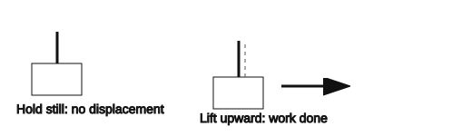
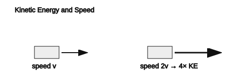
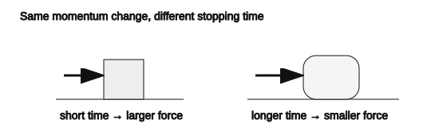
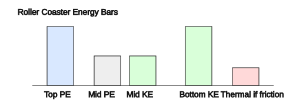

Unit 4 Summative Assessment
Version 1
Directions: Answer questions 1–16 on the answer sheet. Complete questions 17–20 on the back of the answer sheet. You may write on this assessment copy, but only the answer sheet gets graded. Test copies will be recycled after grading.
1. [DOK 1] Momentum is best described as:
A. force applied over a distance
B. mass in motion
C. energy stored because of height
D. power used over time
E. the rate at which work is done
2. [DOK 1] Impulse depends on:
A. force and time
B. mass and height
C. work and distance
D. power and speed
E. energy and gravity
3. [DOK 1] Which situation shows work being done in the physics sense?

A. holding a heavy box still
B. pushing on a wall that does not move
C. carrying a backpack horizontally at constant height
D. lifting a book upward onto a shelf
E. standing still with a heavy backpack
4. [DOK 1] Which object has kinetic energy?
A. a moving skateboard
B. a book sitting on a desk
C. a stretched rubber band at rest
D. water stored behind a dam
E. a battery not connected to a circuit
5. [DOK 1] Energy stored because of height is called:
A. kinetic energy
B. thermal energy
C. gravitational potential energy
D. impulse
E. power
6. [DOK 2] A 4 kg cart moves at 3 m/s. What is the cart’s momentum?
A. 1.3 kg·m/s
B. 7 kg·m/s
C. 12 kg·m/s
D. 24 kg·m/s
E. 48 kg·m/s
7. [DOK 2] A 20 N force acts on a puck for 0.5 s. What impulse is delivered?
A. 10 N·s
B. 20 N·s
C. 40 N·s
D. 0.025 N·s
E. 100 N·s
8. [DOK 2] A student pushes a cart with 15 N for 4 m. How much work is done?
A. 11 J
B. 19 J
C. 30 J
D. 60 J
E. 150 J
9. [DOK 2] A machine does 500 J of work in 10 s. What is its power?
A. 5 W
B. 50 W
C. 100 W
D. 500 W
E. 5000 W
10. [DOK 2] A 2 kg object is lifted 6 m. Use $g=10\,\text{m/s}^2$. What gravitational potential energy is gained?
A. 12 J
B. 20 J
C. 60 J
D. 120 J
E. 600 J
11. [DOK 2] A 4 kg object moves at 5 m/s. What is its kinetic energy?

A. 10 J
B. 20 J
C. 50 J
D. 100 J
E. 200 J
12. [DOK 3] A student says, “A larger object always has more momentum than a smaller object.” Which response best corrects the misconception?
A. Correct, because momentum depends only on mass.
B. Incorrect, because momentum depends on both mass and velocity.
C. Correct, because velocity does not affect momentum.
D. Incorrect, because momentum depends only on height.
E. Correct only if the object is at rest.
13. [DOK 3] Why can an airbag reduce injury in a crash?

A. It reduces the passenger’s change in momentum to zero.
B. It increases stopping time, reducing average force.
C. It removes the need for impulse.
D. It makes momentum disappear.
E. It increases the passenger’s speed before stopping.
14. [DOK 3] A student says, “If an object stops moving, its energy is gone.” Which response is best?

A. Correct, because stopped objects have no energy of any kind.
B. Incorrect, because energy may transform into thermal energy, sound, or other forms.
C. Correct, because conservation only applies to momentum.
D. Incorrect, because kinetic energy always stays kinetic energy.
E. Correct only in collisions.
15. [DOK 3] A car doubles its speed. How does its kinetic energy change?
A. It stays the same.
B. It doubles.
C. It triples.
D. It becomes four times as large.
E. It becomes half as large.
16. [DOK 4] A student claims a machine produces more energy than it uses because it multiplies force. Which evaluation is strongest?
A. Correct, because increasing force creates energy.
B. Correct, because machines can ignore conservation of energy.
C. Incorrect, because machines trade force for distance and cannot create energy.
D. Incorrect, because machines never reduce force.
E. Correct only if friction is present.
Free Response — Questions 17–20
Show work for full credit. Clearly identify final answer(s). Use diagrams, labels, units, and physics vocabulary when appropriate.
17. A 3 kg cart moves at 6 m/s. Calculate the cart’s momentum. If the cart stops, determine the magnitude of its momentum change. Explain how increasing stopping time affects the average force needed to stop the cart.
18. A student lifts a 4 kg backpack 1.5 m onto a shelf. Use $g=10\,\text{m/s}^2$. Calculate the gravitational potential energy gained. If the lift takes 2 seconds, calculate the power. Explain what energy transformation occurred.
19. Two carts collide on a low-friction track. Cart A has 6 kg·m/s of momentum to the right before the collision. Cart B has 2 kg·m/s of momentum to the left before the collision. Determine total momentum before, predict total momentum after if no net external impulse acts, and explain why system choice matters.
20. A student says, “The roller coaster loses energy at the bottom because all the potential energy is gone.” Critique the statement using kinetic energy, potential energy, thermal energy, and conservation of energy.
Unit 4 Summative Assessment
Version 2
Directions: Answer questions 1–16 on the answer sheet. Complete questions 17–20 on the back of the answer sheet. You may write on this assessment copy, but only the answer sheet gets graded. Test copies will be recycled after grading.
1. [DOK 1] Which object has kinetic energy?
A. a book sitting on a desk
B. a moving skateboard
C. water stored behind a dam
D. a battery not connected to a circuit
E. a stretched rubber band at rest
2. [DOK 1] Energy stored because of height is called:
A. impulse
B. power
C. thermal energy
D. gravitational potential energy
E. kinetic energy
3. [DOK 1] Momentum is best described as:
A. force applied over a distance
B. energy stored because of height
C. mass in motion
D. the rate at which work is done
E. power used over time
4. [DOK 1] Which situation shows work being done in the physics sense?
A. standing still with a heavy backpack
B. lifting a book upward onto a shelf
C. holding a heavy box still
D. carrying a backpack horizontally at constant height
E. pushing on a wall that does not move
5. [DOK 1] Impulse depends on:
A. mass and height
B. force and time
C. work and distance
D. energy and gravity
E. power and speed
6. [DOK 2] A 4 kg object moves at 5 m/s. What is its kinetic energy?
A. 20 J
B. 100 J
C. 50 J
D. 10 J
E. 200 J
7. [DOK 2] A 4 kg cart moves at 3 m/s. What is the cart’s momentum?
A. 48 kg·m/s
B. 12 kg·m/s
C. 24 kg·m/s
D. 1.3 kg·m/s
E. 7 kg·m/s
8. [DOK 2] A machine does 500 J of work in 10 s. What is its power?
A. 5000 W
B. 500 W
C. 50 W
D. 100 W
E. 5 W
9. [DOK 2] A student pushes a cart with 15 N for 4 m. How much work is done?
A. 150 J
B. 60 J
C. 30 J
D. 19 J
E. 11 J
10. [DOK 2] A 20 N force acts on a puck for 0.5 s. What impulse is delivered?
A. 100 N·s
B. 40 N·s
C. 20 N·s
D. 10 N·s
E. 0.025 N·s
11. [DOK 2] A 2 kg object is lifted 6 m. Use $g=10\,\text{m/s}^2$. What gravitational potential energy is gained?
A. 12 J
B. 120 J
C. 600 J
D. 20 J
E. 60 J
12. [DOK 3] Why can an airbag reduce injury in a crash?
A. It removes the need for impulse.
B. It increases stopping time, reducing average force.
C. It makes momentum disappear.
D. It reduces the passenger’s change in momentum to zero.
E. It increases the passenger’s speed before stopping.
13. [DOK 3] A student says, “A larger object always has more momentum than a smaller object.” Which response best corrects the misconception?
A. Incorrect, because momentum depends on both mass and velocity.
B. Correct, because momentum depends only on mass.
C. Incorrect, because momentum depends only on height.
D. Correct only if the object is at rest.
E. Correct, because velocity does not affect momentum.
14. [DOK 3] A car doubles its speed. How does its kinetic energy change?
A. It doubles.
B. It becomes half as large.
C. It stays the same.
D. It becomes four times as large.
E. It triples.
15. [DOK 3] A student says, “If an object stops moving, its energy is gone.” Which response is best?
A. Incorrect, because energy may transform into thermal energy, sound, or other forms.
B. Correct, because stopped objects have no energy of any kind.
C. Incorrect, because kinetic energy always stays kinetic energy.
D. Correct only in collisions.
E. Correct, because conservation only applies to momentum.
16. [DOK 4] A student claims a machine produces more energy than it uses because it multiplies force. Which evaluation is strongest?
A. Correct, because increasing force creates energy.
B. Incorrect, because machines trade force for distance and cannot create energy.
C. Correct, because machines can ignore conservation of energy.
D. Incorrect, because machines never reduce force.
E. Correct only if friction is present.
Free Response — Questions 17–20
Show work for full credit. Clearly identify final answer(s). Use diagrams, labels, units, and physics vocabulary when appropriate.
17. Two carts collide on a low-friction track. Cart A has 6 kg·m/s of momentum to the right before the collision. Cart B has 2 kg·m/s of momentum to the left before the collision. Determine total momentum before, predict total momentum after if no net external impulse acts, and explain why system choice matters.
18. A 3 kg cart moves at 6 m/s. Calculate the cart’s momentum. If the cart stops, determine the magnitude of its momentum change. Explain how increasing stopping time affects the average force needed to stop the cart.
19. A student says, “The roller coaster loses energy at the bottom because all the potential energy is gone.” Critique the statement using kinetic energy, potential energy, thermal energy, and conservation of energy.
20. A student lifts a 4 kg backpack 1.5 m onto a shelf. Use $g=10\,\text{m/s}^2$. Calculate the gravitational potential energy gained. If the lift takes 2 seconds, calculate the power. Explain what energy transformation occurred.
Unit 4 Summative Assessment
Version 3
Directions: Answer questions 1–16 on the answer sheet. Complete questions 17–20 on the back of the answer sheet. You may write on this assessment copy, but only the answer sheet gets graded. Test copies will be recycled after grading.
1. [DOK 1] Impulse depends on:
A. force and time
B. power and speed
C. energy and gravity
D. mass and height
E. work and distance
2. [DOK 1] Which situation shows work being done in the physics sense?
A. holding a heavy box still
B. carrying a backpack horizontally at constant height
C. lifting a book upward onto a shelf
D. standing still with a heavy backpack
E. pushing on a wall that does not move
3. [DOK 1] Which object has kinetic energy?
A. a stretched rubber band at rest
B. a moving skateboard
C. a battery not connected to a circuit
D. water stored behind a dam
E. a book sitting on a desk
4. [DOK 1] Momentum is best described as:
A. power used over time
B. force applied over a distance
C. mass in motion
D. energy stored because of height
E. the rate at which work is done
5. [DOK 1] Energy stored because of height is called:
A. gravitational potential energy
B. kinetic energy
C. thermal energy
D. impulse
E. power
6. [DOK 2] A student pushes a cart with 15 N for 4 m. How much work is done?
A. 19 J
B. 60 J
C. 150 J
D. 30 J
E. 11 J
7. [DOK 2] A 2 kg object is lifted 6 m. Use $g=10\,\text{m/s}^2$. What gravitational potential energy is gained?
A. 600 J
B. 120 J
C. 12 J
D. 20 J
E. 60 J
8. [DOK 2] A 4 kg cart moves at 3 m/s. What is the cart’s momentum?
A. 12 kg·m/s
B. 24 kg·m/s
C. 48 kg·m/s
D. 7 kg·m/s
E. 1.3 kg·m/s
9. [DOK 2] A 20 N force acts on a puck for 0.5 s. What impulse is delivered?
A. 40 N·s
B. 10 N·s
C. 20 N·s
D. 100 N·s
E. 0.025 N·s
10. [DOK 2] A 4 kg object moves at 5 m/s. What is its kinetic energy?
A. 10 J
B. 50 J
C. 20 J
D. 100 J
E. 200 J
11. [DOK 2] A machine does 500 J of work in 10 s. What is its power?
A. 5 W
B. 500 W
C. 100 W
D. 50 W
E. 5000 W
12. [DOK 3] A student says, “If an object stops moving, its energy is gone.” Which response is best?
A. Correct only in collisions.
B. Correct, because conservation only applies to momentum.
C. Incorrect, because energy may transform into thermal energy, sound, or other forms.
D. Correct, because stopped objects have no energy of any kind.
E. Incorrect, because kinetic energy always stays kinetic energy.
13. [DOK 3] A car doubles its speed. How does its kinetic energy change?
A. It stays the same.
B. It becomes four times as large.
C. It doubles.
D. It triples.
E. It becomes half as large.
14. [DOK 3] Why can an airbag reduce injury in a crash?
A. It increases stopping time, reducing average force.
B. It reduces the passenger’s change in momentum to zero.
C. It removes the need for impulse.
D. It makes momentum disappear.
E. It increases the passenger’s speed before stopping.
15. [DOK 3] A student says, “A larger object always has more momentum than a smaller object.” Which response best corrects the misconception?
A. Correct, because velocity does not affect momentum.
B. Correct only if the object is at rest.
C. Incorrect, because momentum depends on both mass and velocity.
D. Correct, because momentum depends only on mass.
E. Incorrect, because momentum depends only on height.
16. [DOK 4] A student claims a machine produces more energy than it uses because it multiplies force. Which evaluation is strongest?
A. Correct only if friction is present.
B. Correct, because machines can ignore conservation of energy.
C. Incorrect, because machines trade force for distance and cannot create energy.
D. Correct, because increasing force creates energy.
E. Incorrect, because machines never reduce force.
Free Response — Questions 17–20
Show work for full credit. Clearly identify final answer(s). Use diagrams, labels, units, and physics vocabulary when appropriate.
17. A student lifts a 4 kg backpack 1.5 m onto a shelf. Use $g=10\,\text{m/s}^2$. Calculate the gravitational potential energy gained. If the lift takes 2 seconds, calculate the power. Explain what energy transformation occurred.
18. A student says, “The roller coaster loses energy at the bottom because all the potential energy is gone.” Critique the statement using kinetic energy, potential energy, thermal energy, and conservation of energy.
19. A 3 kg cart moves at 6 m/s. Calculate the cart’s momentum. If the cart stops, determine the magnitude of its momentum change. Explain how increasing stopping time affects the average force needed to stop the cart.
20. Two carts collide on a low-friction track. Cart A has 6 kg·m/s of momentum to the right before the collision. Cart B has 2 kg·m/s of momentum to the left before the collision. Determine total momentum before, predict total momentum after if no net external impulse acts, and explain why system choice matters.
Unit 4 Summative Assessment
Version 4
Directions: Answer questions 1–16 on the answer sheet. Complete questions 17–20 on the back of the answer sheet. You may write on this assessment copy, but only the answer sheet gets graded. Test copies will be recycled after grading.
1. [DOK 1] Which formula represents momentum?
A. $W=Fd$
B. $P=\frac{W}{t}$
C. $p=mv$
D. $KE=\frac{1}{2}mv^2$
E. $PE=mgh$
2. [DOK 1] Which statement describes conservation of momentum?
A. Momentum disappears when objects stop.
B. Total momentum of a system stays the same when no net external impulse acts.
C. Momentum is always equal to energy.
D. Momentum depends only on force.
E. Momentum is not useful in collisions.
3. [DOK 1] Power is best described as:
A. energy due to height
B. energy due to motion
C. force times time
D. the rate of doing work
E. mass times velocity
4. [DOK 1] Which situation is most directly about impulse?
A. a car parked on a hill
B. a gymnast bending knees while landing
C. a book sitting on a shelf
D. a battery storing chemical energy
E. sunlight reaching Earth
5. [DOK 1] Which energy type increases as a roller coaster rises higher?
A. kinetic energy
B. gravitational potential energy
C. impulse
D. power
E. momentum
6. [DOK 2] A 6 kg cart moves at 2 m/s. What is its momentum?
A. 3 kg·m/s
B. 8 kg·m/s
C. 12 kg·m/s
D. 24 kg·m/s
E. 36 kg·m/s
7. [DOK 2] A 30 N force acts for 0.2 s. What is the impulse?
A. 0.006 N·s
B. 6 N·s
C. 30 N·s
D. 150 N·s
E. 300 N·s
8. [DOK 2] A force of 40 N moves a crate 3 m. How much work is done?
A. 13 J
B. 37 J
C. 43 J
D. 120 J
E. 400 J
9. [DOK 2] A machine does 900 J of work in 30 s. What is the power?
A. 3 W
B. 30 W
C. 90 W
D. 270 W
E. 27000 W
10. [DOK 2] A 5 kg object is lifted 2 m. Use $g=10\,\text{m/s}^2$. What gravitational potential energy is gained?
A. 10 J
B. 25 J
C. 50 J
D. 100 J
E. 250 J
11. [DOK 2] A 2 kg object moves at 8 m/s. What is its kinetic energy?
A. 8 J
B. 16 J
C. 32 J
D. 64 J
E. 128 J
12. [DOK 3] A student says, “Momentum is not conserved in a crash because the cars stop.” Which response is best?
A. Correct, because stopping destroys momentum.
B. Incorrect, because total momentum can transfer to other objects or the Earth depending on the system.
C. Correct, because collisions do not involve systems.
D. Incorrect, because momentum is the same as energy.
E. Correct only for inelastic collisions.
13. [DOK 3] Why does a soft mat reduce the force on a gymnast landing from a jump?
A. It reduces the gymnast’s mass.
B. It makes the change in momentum zero.
C. It increases stopping time.
D. It removes gravity.
E. It increases kinetic energy.
14. [DOK 3] A machine makes lifting a load easier by reducing the force needed. Why does this not create energy?
A. The machine increases the distance over which the force is applied.
B. The machine removes friction completely.
C. The machine creates momentum instead.
D. Energy conservation does not apply to machines.
E. Work output is always greater than work input.
15. [DOK 3] A pendulum reaches the lowest point of its swing. Which statement is best if air resistance is ignored?
A. All energy has disappeared.
B. Kinetic energy is greatest.
C. Potential energy is greatest.
D. Momentum must be zero.
E. Power must be zero.
16. [DOK 4] A company claims its device powers itself forever after one push. Which evaluation is strongest?
A. Possible if the device is heavy enough.
B. Possible if the device moves very slowly.
C. Not physically reasonable because friction and thermal energy transfers prevent perfect self-powering forever.
D. Reasonable because energy can be created by motion.
E. Reasonable because power is different from energy.
Free Response — Questions 17–20
Show work for full credit. Clearly identify final answer(s). Use diagrams, labels, units, and physics vocabulary when appropriate.
17. A 5 kg cart moves at 4 m/s and then stops. Calculate the cart’s initial momentum, determine the magnitude of the impulse needed to stop it, and explain why a longer stopping time reduces average force.
18. A 10 N force moves a box 8 m. Calculate the work done. If the work is done in 4 seconds, calculate power. Explain what work means as energy transfer.
19. Two carts stick together after a collision. Explain how you would test whether momentum was conserved. Include the system, before data, after data, and one reason results may not match perfectly.
20. A student says, “Solar panels create energy from nothing.” Critique the statement using energy source, energy transformation, and conservation of energy.
Unit 4 Summative Assessment
Version 5
Directions: Answer questions 1–16 on the answer sheet. Complete questions 17–20 on the back of the answer sheet. You may write on this assessment copy, but only the answer sheet gets graded. Test copies will be recycled after grading.
1. [DOK 1] Which quantity is calculated using $KE=\frac{1}{2}mv^2$?
A. momentum
B. impulse
C. kinetic energy
D. power
E. work
2. [DOK 1] Which phrase best describes work in physics?
A. any difficult task
B. force causing displacement in the direction of the force
C. energy stored because of height
D. mass in motion
E. force acting over time
3. [DOK 1] Which quantity is measured in watts?
A. momentum
B. impulse
C. work
D. power
E. potential energy
4. [DOK 1] Which collision is inelastic?
A. two carts bounce apart
B. two carts stick together
C. a ball rolls downhill
D. a pendulum swings
E. a student lifts a box
5. [DOK 1] Which is an energy transformation?
A. a cart has 10 kg·m/s of momentum
B. chemical energy in food becomes motion and thermal energy
C. force acts for 2 seconds
D. a ball has mass
E. velocity has direction
6. [DOK 2] A 2 kg ball moves at 9 m/s. What is its momentum?
A. 4.5 kg·m/s
B. 11 kg·m/s
C. 18 kg·m/s
D. 36 kg·m/s
E. 81 kg·m/s
7. [DOK 2] A 50 N force acts for 0.1 s. What impulse is delivered?
A. 0.002 N·s
B. 0.5 N·s
C. 5 N·s
D. 50 N·s
E. 500 N·s
8. [DOK 2] A student applies 25 N of force over 2 m. How much work is done?
A. 12.5 J
B. 23 J
C. 27 J
D. 50 J
E. 100 J
9. [DOK 2] A machine does 240 J of work in 6 seconds. What is its power?
A. 4 W
B. 40 W
C. 60 W
D. 144 W
E. 240 W
10. [DOK 2] A 3 kg object is lifted 4 m. Use $g=10\,\text{m/s}^2$. What gravitational potential energy is gained?
A. 12 J
B. 30 J
C. 40 J
D. 120 J
E. 300 J
11. [DOK 2] A 6 kg object moves at 2 m/s. What is its kinetic energy?
A. 6 J
B. 12 J
C. 18 J
D. 24 J
E. 48 J
12. [DOK 3] A student says, “Impulse is the same as force.” Which response is best?
A. Correct, because impulse does not involve time.
B. Incorrect, because impulse depends on force and time.
C. Correct, because force and momentum are identical.
D. Incorrect, because impulse depends only on mass.
E. Correct only during collisions.
13. [DOK 3] Why does doubling speed have a large effect on kinetic energy?
A. Kinetic energy depends on speed squared.
B. Kinetic energy depends only on direction.
C. Momentum disappears at high speed.
D. Work is not related to energy.
E. Potential energy becomes zero.
14. [DOK 3] A student says, “The energy was lost because the brakes made the car stop.” Which correction is best?
A. The energy disappeared completely.
B. The kinetic energy transformed mostly into thermal energy.
C. The car kept all kinetic energy after stopping.
D. Momentum and energy are always the same.
E. Brakes create energy from nothing.
15. [DOK 3] A ball rolls down a ramp and speeds up. Which energy change best describes the motion if friction is small?
A. kinetic energy changes into gravitational potential energy
B. gravitational potential energy changes into kinetic energy
C. impulse changes into power
D. momentum changes into height
E. power changes into mass
16. [DOK 4] A student says, “A helmet protects you because it reduces your momentum change to zero.” Which evaluation is strongest?
A. Correct, because helmets remove impulse.
B. Incorrect, because the helmet increases stopping time and reduces force, even though momentum still changes.
C. Correct, because helmets prevent motion.
D. Incorrect, because helmets increase gravity.
E. Correct only for low-speed impacts.
Free Response — Questions 17–20
Show work for full credit. Clearly identify final answer(s). Use diagrams, labels, units, and physics vocabulary when appropriate.
17. A 2 kg ball moves at 12 m/s and is stopped by a glove. Calculate the ball’s initial momentum, determine the magnitude of impulse needed to stop it, and explain why “giving” with the glove reduces average force.
18. A student does 300 J of work lifting equipment in 5 seconds. Calculate power, explain what power measures, and explain whether doing the same work faster changes the total work.
19. A cart collision happens on a track. A student says, “Momentum is gone because the carts stopped.” Critique the statement using system choice, external forces, and conservation of momentum.
20. A car brakes to a stop. Explain what happens to the car’s kinetic energy and why this does not violate conservation of energy.
Unit 4 Summative Assessment
Version 6
Directions: Answer questions 1–16 on the answer sheet. Complete questions 17–20 on the back of the answer sheet. You may write on this assessment copy, but only the answer sheet gets graded. Test copies will be recycled after grading.
1. [DOK 1] Which formula represents work?
A. $p=mv$
B. $J=Ft$
C. $W=Fd$
D. $P=\frac{W}{t}$
E. $PE=mgh$
2. [DOK 1] Which quantity describes force acting over time?
A. impulse
B. work
C. power
D. potential energy
E. kinetic energy
3. [DOK 1] Which situation has gravitational potential energy?
A. a ball rolling on the floor
B. a book held above the ground
C. a hockey puck sliding on ice
D. a fan spinning
E. a car braking
4. [DOK 1] Which phrase best describes conservation of energy?
A. energy can be created by machines
B. energy disappears when motion stops
C. energy can transfer and transform but total energy is conserved
D. energy is the same as momentum
E. energy exists only in moving objects
5. [DOK 1] Which object has momentum?
A. a moving bicycle
B. a book at rest
C. a stretched spring at rest
D. water stored behind a dam
E. a charged battery sitting still
6. [DOK 2] A 7 kg cart moves at 3 m/s. What is its momentum?
A. 10 kg·m/s
B. 21 kg·m/s
C. 42 kg·m/s
D. 73 kg·m/s
E. 343 kg·m/s
7. [DOK 2] A 12 N force acts for 2 seconds. What impulse is delivered?
A. 6 N·s
B. 10 N·s
C. 14 N·s
D. 24 N·s
E. 144 N·s
8. [DOK 2] A force of 18 N moves an object 5 m. How much work is done?
A. 3.6 J
B. 23 J
C. 45 J
D. 90 J
E. 180 J
9. [DOK 2] A motor does 1000 J of work in 20 seconds. What is its power?
A. 20 W
B. 50 W
C. 100 W
D. 500 W
E. 20000 W
10. [DOK 2] A 2 kg object is raised 10 m. Use $g=10\,\text{m/s}^2$. What gravitational potential energy is gained?
A. 20 J
B. 100 J
C. 200 J
D. 1000 J
E. 2000 J
11. [DOK 2] A 10 kg object moves at 4 m/s. What is its kinetic energy?
A. 20 J
B. 40 J
C. 80 J
D. 160 J
E. 400 J
12. [DOK 3] A student says, “A machine that makes force smaller must also make the work smaller.” Which response is best?
A. Correct, because force and work are identical.
B. Incorrect, because the machine may increase distance while reducing force.
C. Correct, because energy can be destroyed.
D. Incorrect, because force is never part of work.
E. Correct only if there is no friction.
13. [DOK 3] A cart rolls up a ramp and slows down. Which energy transformation is most important?
A. kinetic energy into gravitational potential energy
B. gravitational potential energy into kinetic energy
C. impulse into power
D. power into momentum
E. momentum into mass
14. [DOK 3] A student says, “Momentum and kinetic energy are the same because both depend on motion.” Which correction is best?
A. They are the same quantity with different names.
B. Momentum depends on mass and velocity; kinetic energy depends on mass and speed squared.
C. Momentum depends on height; kinetic energy depends on force.
D. Kinetic energy has direction but momentum does not.
E. Neither quantity depends on speed.
15. [DOK 3] A student says, “Solar panels create energy.” Which correction is best?
A. Solar panels transform light energy into electrical energy.
B. Solar panels violate energy conservation.
C. Solar panels create energy from nothing.
D. Solar panels use momentum only.
E. Solar panels remove thermal energy from the universe.
16. [DOK 4] A student claims, “A crash pad reduces injury by reducing the force without changing anything else.” Which evaluation is strongest?
A. Correct, because force can be reduced without changing time.
B. Incorrect, because the pad reduces average force mainly by increasing stopping time and distance.
C. Correct, because impulse becomes zero.
D. Incorrect, because crash pads increase gravity.
E. Correct only if energy disappears.
Free Response — Questions 17–20
Show work for full credit. Clearly identify final answer(s). Use diagrams, labels, units, and physics vocabulary when appropriate.
17. A 7 kg cart moves at 3 m/s and then stops. Calculate the initial momentum, determine the impulse needed to stop it, and explain how stopping time affects average force.
18. A 20 N force moves an object 5 m. Calculate the work done. If this takes 4 seconds, calculate power. Explain work as energy transfer.
19. Two carts collide and stick together on a nearly frictionless track. Explain why momentum can be conserved even though kinetic energy may decrease.
20. A website claims to sell a machine that keeps running forever after one push. Critique the claim using conservation of energy, friction, and thermal energy.
Unit 4 Summative Assessment
Answer Key — Multiple Choice
| Version | 1 | 2 | 3 | 4 | 5 | 6 | 7 | 8 | 9 | 10 | 11 | 12 | 13 | 14 | 15 | 16 |
|---|
| 1 | B | A | D | A | C | C | A | D | B | D | C | B | B | B | D | C |
|---|
| 2 | B | D | C | B | B | C | B | C | B | D | B | B | A | D | A | B |
|---|
| 3 | A | C | B | C | A | B | B | A | B | B | D | C | B | A | C | C |
|---|
| 4 | C | B | D | B | B | C | B | D | B | D | D | B | C | A | B | C |
|---|
| 5 | C | B | D | B | B | C | C | D | B | D | B | B | A | B | B | B |
|---|
| 6 | C | A | B | C | A | B | D | D | B | C | C | B | A | B | A | B |
|---|
Free Response Key / Scoring Guide
Version 1
- $p=mv=18\,\text{kg·m/s}$. Momentum change magnitude is 18 kg·m/s. Increasing stopping time lowers average force for the same impulse.
- $PE=mgh=60\,\text{J}$. $P=30\,\text{W}$. Chemical energy from the student is transferred into gravitational potential energy and some thermal energy.
- Total momentum is 4 kg·m/s right. After collision it should still be 4 kg·m/s right if the system has no net external impulse. System choice determines whether outside forces matter.
- Potential energy has transformed into kinetic energy and possibly thermal energy. Energy is conserved; it is not lost, though mechanical energy can transform into less useful forms.
Version 2
- Total momentum is 4 kg·m/s right. After collision it should still be 4 kg·m/s right if the system has no net external impulse. System choice determines whether outside forces matter.
- $p=mv=18\,\text{kg·m/s}$. Momentum change magnitude is 18 kg·m/s. Increasing stopping time lowers average force for the same impulse.
- Potential energy has transformed into kinetic energy and possibly thermal energy. Energy is conserved; it is not lost, though mechanical energy can transform into less useful forms.
- $PE=mgh=60\,\text{J}$. $P=30\,\text{W}$. Chemical energy from the student is transferred into gravitational potential energy and some thermal energy.
Version 3
- $PE=mgh=60\,\text{J}$. $P=30\,\text{W}$. Chemical energy from the student is transferred into gravitational potential energy and some thermal energy.
- Potential energy has transformed into kinetic energy and possibly thermal energy. Energy is conserved; it is not lost, though mechanical energy can transform into less useful forms.
- $p=mv=18\,\text{kg·m/s}$. Momentum change magnitude is 18 kg·m/s. Increasing stopping time lowers average force for the same impulse.
- Total momentum is 4 kg·m/s right. After collision it should still be 4 kg·m/s right if the system has no net external impulse. System choice determines whether outside forces matter.
Version 4
- $p=20\,\text{kg·m/s}$; stopping impulse magnitude is 20 N·s. Longer stopping time reduces average force for the same impulse.
- $W=80\,\text{J}$; $P=20\,\text{W}$. Work is energy transferred by a force over distance.
- Choose the two carts as the system; compare total momentum before and after. Mismatch may come from friction, measurement error, or external forces.
- Solar panels transform light energy into electrical energy. They do not create energy from nothing; total energy is conserved.
Version 5
- $p=24\,\text{kg·m/s}$; impulse magnitude is 24 N·s. Giving with the glove increases stopping time, lowering average force.
- $P=60\,\text{W}$. Power measures rate of doing work. Same work done faster means greater power, not greater total work.
- Momentum may transfer to other objects/Earth or be conserved in the chosen system if external impulse is negligible; it is not simply gone.
- Kinetic energy transforms mostly into thermal energy and sound in brakes/tires/road. Energy is conserved.
Version 6
- $p=21\,\text{kg·m/s}$; impulse magnitude is 21 N·s. Longer stopping time lowers average force for the same momentum change.
- $W=100\,\text{J}$; $P=25\,\text{W}$. Work is energy transferred by a force over distance.
- Momentum can be conserved for the cart system when external impulse is negligible, while kinetic energy transforms into thermal/sound/internal energy in an inelastic collision.
- A forever-running machine violates conservation of energy in real conditions because friction and thermal energy transfers remove useful mechanical energy.
Suggested FR scoring: 4 points each. 4 = accurate answer, correct vocabulary/model, complete reasoning; 3 = mostly correct with minor error; 2 = partial understanding; 1 = minimal correct physics; 0 = blank/unrelated.
Unit 4 Summative Assessment
Name blank only — answer sheet gets graded.
Name:
Version: ① ② ③ ④ ⑤ ⑥